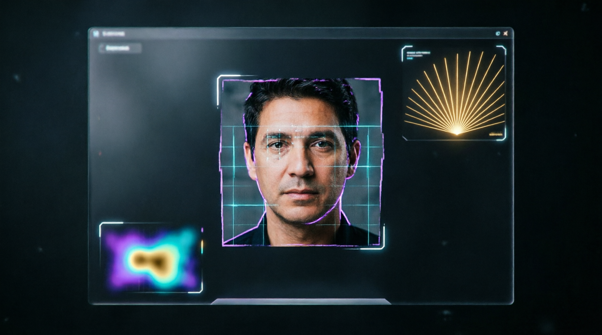
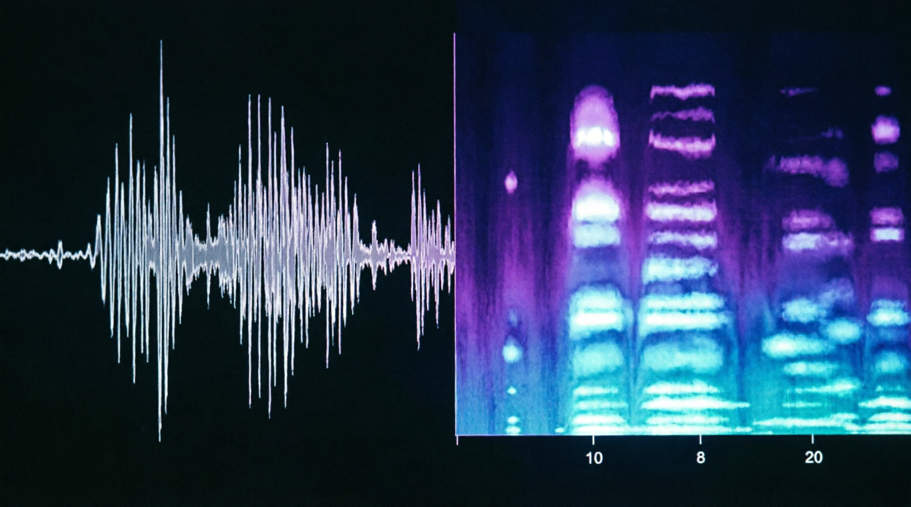
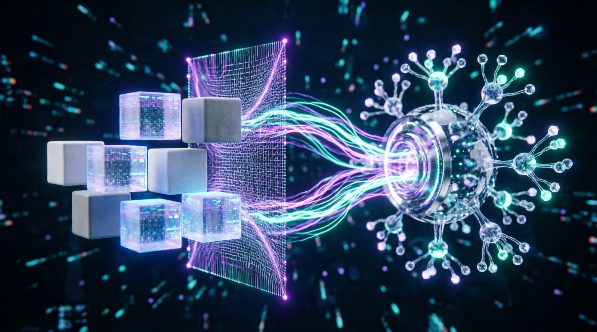

anti-ai-qwen-academy • Deepfake Detection Specialist
Qwen (Tongyi Qianwen) • 100% Offline • 10 days

👁️
🔊
📊🏆 CERTIFICATE REQUIREMENTS
Deepfake + Qwen formats
No mistakes
5 cases in Qwen formats
⚠️ Perfect results → Contributor Pipeline access
📊 Progress
⚠️ All data will be deleted
🛡️ Practice: Qwen Deepfake Cases
Synthetic content analysis • Qwen reporting formats
📚 Qwen Deepfake Specialist Library
Pipelines, data formats, tools, materials
🎯 Why Qwen needs Deepfake Detection Specialists
Qwen (Tongyi Qianwen) develops multimodal models (Qwen-VL, Qwen-Audio, Qwen2.5-Multimodal). Safe operation requires specialists covering these tasks:
🧹 Data Curation
Filtering synthetic/manipulative content from training datasets
qwen_dataset_clean.json🛡️ Input Moderation
Checking user media requests for deepfakes before model input
qwen_safety_report.md🧪 Red-Teaming & Eval
Testing Qwen-VL/Audio robustness against adversarial deepfakes
qwen_vuln_eval.csv📊 RLHF Annotation
Labeling model output quality/reliability for multimodal queries
qwen_rlhf_pair.json⚖️ AI Safety Compliance
Auditing compliance with Tongyi / Alibaba AI Principles
qwen_compliance_check.pdf🔄 How specialists integrate into Qwen workflow
🔗 Collaboration formats with Qwen/Alibaba Cloud
🟢 Official Data Annotation Pipeline
Via Alibaba Cloud Data Service
🟡 Safety Reviewer / Eval Contributor
Via Tongyi Community & GitHub
🟠 External Compliance Auditor
For partners integrating Qwen API
🔵 Freelance RLHF Annotator
Via annotation platforms working with Qwen data
📦 Ready materials (Qwen-specific)
All materials work offline, no telemetry, mobile-compatible.
qwen_safety_guidelines.json
Adapted Tongyi AI Safety rules (offline)
JSONqwen_rlhf_template.json
Labeling template for alignment models
JSONqwen_eval_report.md
Report structure for Qwen ML engineers
Markdownqwen_redteam_checklist.pdf
Adversarial testing checklist (offline)
PDFqwen_dataset_cleaner.js
Script for validating Qwen-compatible JSON datasets
JS (offline)🛠️ Graduate Skills
🔹 Hard Skills
- Detect 15+ deepfake artifacts
- Qwen-Audio spectrogram analysis
- EXIF/Metadata analysis offline
- Formats: JSON, CSV, Markdown (Qwen-compatible)
- RLHF labeling and safety eval
🔹 Soft Skills
- Pixel-level attention to detail
- Critical thinking: 'trust but verify'
- Working with manipulative content (ethics)
- Clear documentation for ML engineers
- Compliance mindset: Tongyi AI Principles
💼 Where do Qwen Deepfake Specialists work?
Starting salaries: $500-2000/mo • Remote • Flexible
📈 Path to Qwen Deepfake Specialist
- Days 1-3: Qwen-VL architecture, deepfake types, visual artifacts
- Days 4-6: Audio synthesis, EXIF, RLHF labeling, Qwen formats
- Days 7-8: Red-teaming, moderation, complex analysis
- Day 9: Portfolio in Qwen formats
- Day 10: FINAL EXAM (10/10)
📦 Qwen Reporting Formats
🤝 SUPPORT THE PROJECT 💙
App is free. Always will be.
Support development: